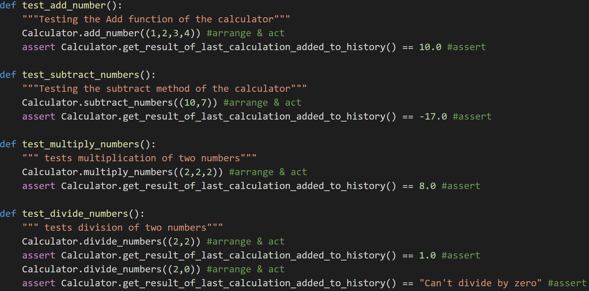
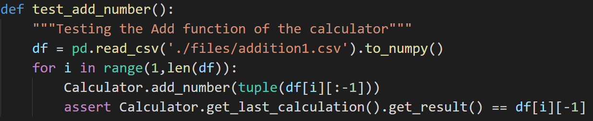

Testing
Home
Pylint
Testing
(current)
OOP
Seperation
GitHub Repo

Examples of tests in the calculator program
Why is Testing Important?
How else would you know if your code works?
Proper testing can detect any bugs and defects in the code
It can also find security flaws
It ensures the code does exactly what it is supposed to do before publishing
Lastly, it will prove that there will not be any unexpected results
What is AAA Testing?
It stands for: Arrange, Act, Assert
Arrange: code required to execute a specific test
Act: invoke the method being tested
Assert: check whether the expectations were met
Example:
def test_add():
#arrange
val1=1
val2=2
#act
q=add(val1,val2)
#assert
q=3

Example of External Testing
External Testing
For external testing, you need pandas installed
The idea is that you will need to call the file
You can use any sort of file or database
Examples are python files, JSON, CSV, text, and SQL
This means, how you load the files depends on your input
How you preprocess the data in those files also depends on your input
For example, if you want to use pandas and CSV files, look at the picture on the left
This is one way of reading a CSV file into a test and creating assert statements
The proper way is to create your own file handling, but it is not needed if it is only for testing
The basics steps to use external data in testing are:
Read the file
Find the result values
Do the test using the rest of the values
Finally, assert the multiple values equals the result value
W3C
©2021 Copyright
Authors:
Jay Patel